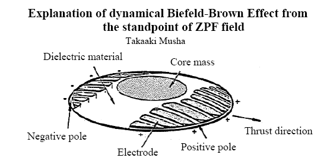
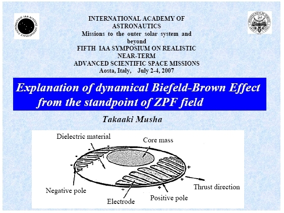

This document has been published with courtesy of Takaaki Musha
Publication date : September 4, 2007 - Last update : September 4,
2007
This
paper has been presented at the 5th IAA Symposium on Realistic
near-term advanced scientific space missions
at Aosta (Italy) - July 2-4, 2007


Click here to download the full version (173
Kb) in PDF 

Click here to download the full presentation
(437 Kb) in PDF 
Other papers and publications from the same author :
Theoretical explanation of the Biefeld-Brown Effect by Takaaki Musha
The Possibility of Strong Coupling Between Electricity and Gravitation by Takaaki Musha
Infinite Energy Magazine Issue 53 ( Jan-Feb 2004 ) page 61-64
return to
the Lifter project page
visitors
since September 4, 2007